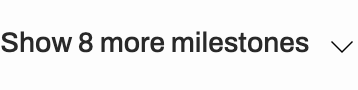
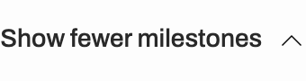

Home
Primary button
- Corner radius
- 30px
- Padding
- 13px 24px
- Layout gap
- 28px
Full measurements
- Margin
- 0px
- Width
- 275.047px
- Height
- 48px
- Top border
- 0px none rgb(253, 253, 253)
- Grid columns
- none
.hero .primary Website design library
Website design libraryDesign rules from the Yopeso website, with component specimens and measurements at 1512px and 390px.
--ink#292929--muted#6A6A6A--line#DCDCDC--accent#DCDCDC--soft#F5F5F5--paper#FDFDFDManrope for headings. Archivo Body (16px) for introductions, descriptions and prose. Archivo Small (14px) for helper text, office contact details, result counts and explanatory notes.
| Text style | Token | Desktop rule | Mobile rule |
|---|---|---|---|
| Display | --type-display | clamp(44px,5.1vw,72px) | 43px |
| Contact | --type-contact | clamp(42px,4.7vw,64px) | 43px |
| Section | --type-section | clamp(32px,3.3vw,47px) | 34px |
| Title | --type-title | 22px | 22px |
| Diagram | --type-diagram | 20px | 20px |
| Quote | --type-quote | 22px | 22px |
| Lead | --type-lead | 16px | 16px |
| Body | --type-body | 16px | 16px |
| Small | --type-small | 14px | 14px |
| Button | --type-button | 14px | 14px |
| Action | --type-action | 13px | 13px |
| Caption | --type-caption | 12px | 12px |
| Label | --type-label | 11px | 11px |
| Category | --type-category | 11px | 11px |
| Token | Desktop | Mobile |
|---|---|---|
| --leading-body | 1.7 | 1.7 |
| --leading-heading | 1.13 | 1.13 |
| --leading-text | 1.6 | 1.6 |
| --leading-title | 1.35 | 1.35 |
| --tracking-display | -3px | -1.9px |
| --tracking-section | -1.8px | -1.4px |
| --weight-medium | 500 | 500 |
| --weight-regular | 400 | 400 |
| --weight-semibold | 600 | 600 |
| Distance | Token | Desktop | Mobile |
|---|---|---|---|
| Card label to title | --space-card | 16px | 16px |
| Section label to heading | --space-label | 24px | 20px |
| Heading to body copy | --space-copy | 24px | 20px |
| Copy to actions | --space-actions | 28px | 24px |
| Heading group to content | --space-content | 40px | 32px |
| Section top and bottom padding | --space-section | 64px | 48px |
Service row
Mobile · 0pxFilter trigger
Mobile · 8pxInsight card
Mobile · 18pxActivity card
Mobile · 20pxPrimary button
Mobile · 30pxApplied case
Mobile · 30pxCapabilities section
Mobile · 30pxDesktop specimens from the source pages. Measurements show desktop / mobile when values differ.
.hero .primary.hero .secondary#capabilities .text-link

--space-actions--space-section.carousel-controlsheader.site-shell#capabilities.cap-list button.case-visual.testimonial-layout.insights-grid article.footer-location.cap-list button.bos-stage.bos-applied-case.dl-faq details.activity-card.office-slide.story-milestone.roles-search.filter-trigger.role-row.role-apply-bottom